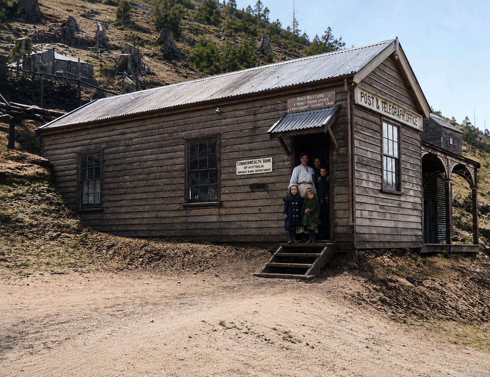
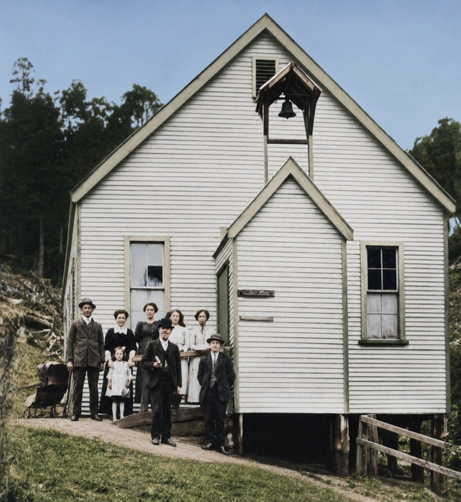

People at the centre
Names, occupations and family connections help turn the historical record into a fuller account of the community.
A book in preparation about Magnet, its mining years, and the people whose lives were connected to this small community in Tasmania’s north-west.
Follow the project
A Tasmanian mining history
This project follows the human story of Magnet: the families, workers, businesses and institutions that made a community in a remote part of Tasmania. It is being developed with close attention to the records and memories that remain.
Names, occupations and family connections help turn the historical record into a fuller account of the community.
Mine sites, tracks, buildings and the surrounding north-west country form the setting for Magnet’s story.
The book will trace Magnet’s changing fortunes through the events, people and decisions that shaped the district.
“A history should be precise enough to trust—and alive enough to remember.”— A guiding principle for this project

Photographs give the history a sense of place: they show the buildings and gathering places where community life unfolded.
Magnet Methodist Church.The book is being built from the records that can be checked and traced. As the project develops, this site will share more of the sources and stories behind it.